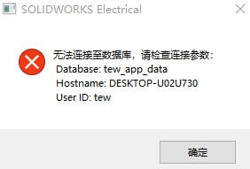
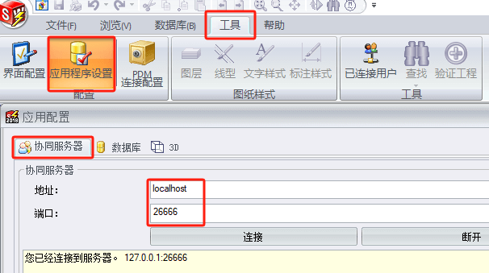
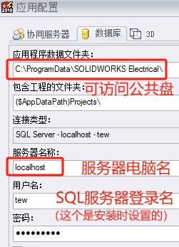
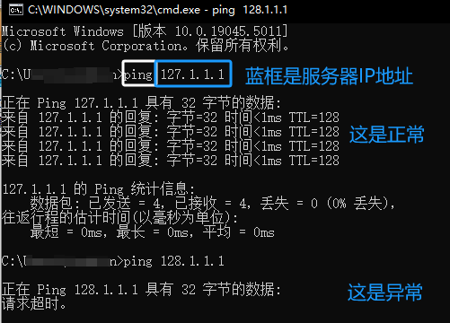

无法连接至数据库
无法连接至数据库，请检查连接参数
原理
电气Electrical软件是通过将项目文件和设计数据存放在服务器数据库使用的，因此您需设置【工具-应用程序设置-协同服务器】和【工具-应用程序设置-数据库】
因此如果和设置中的服务器访问异常，就会出现“无法连接至数据库”的错误。如果网络中存在访问服务器的连接问题，你可以尝试下面方法检查原因：
 方法-连接ping
确保服务器与客户端在同一局域网中
打开【开始/菜单-window系统-命令提示器】输入命令：ping <IP地址> 检查；
方法-防火墙Telnet
关闭服务器防火墙后，查看客户端是否可正常连接，
- 若不可以：应检查网络是否通
- 若可以：则为防火墙设置问题。
防火墙高级面板方式：
1.进入控制面板->管理工具->找到“高级安全Windows防火墙
2点击入站规则
3.找到 回显请求-ICMPv4-In (Echo Request -ICMPv4-In)4.右键点击规则点击启用规则(Enable)